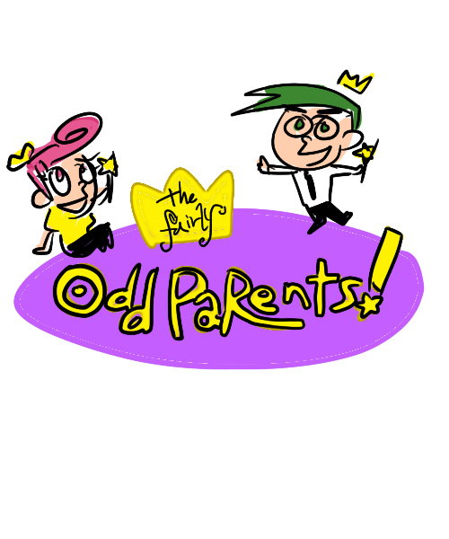

|  | 제목 : 티미의 못말리는 수호천사 | 제작사 : 니켈로디언 |
| ▶작품 소개 학교에서는 무서운 일찐, 집에서는 돌보미 누나 비키에게 괴롭힘받던 티미에게 수호천사가 나타난다. |
||
| ▶제작자 리뷰 파워퍼프걸, 스폰지밥, 지미 뉴트론 등과 함께 굉장히 유명했던 미국 만화. 이걸 모른다면 당신은...음....ㅎㅎ..유년시절을 우울하게 보낸거다. 심심하거나 생각없을 때 보면 좋고, 볼수록 수호천사가 가지고 싶다는 생각이 든다... |
||
| 제작자 별점 ★★★★★ | ||
| 장르 : #개그 #일상 #판타지 | ||